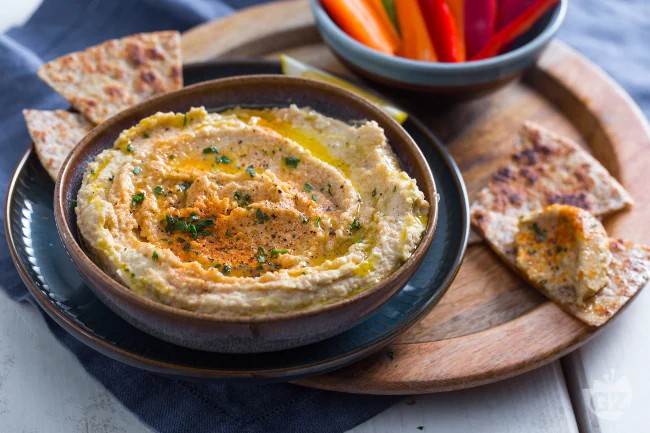
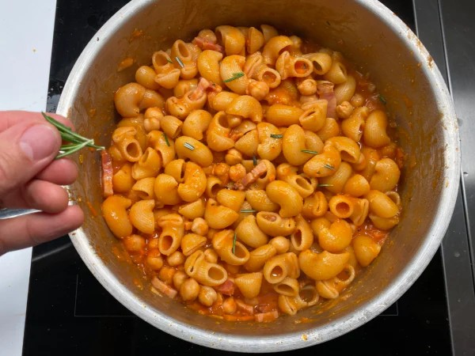

Cosa sono i ceci?
I ceci sono legumi antichissimi, diffusi in molte cucine tradizionali. Hanno una consistenza farinosa e un sapore delicato, ideali per zuppe, insalate e piatti come l'hummus. Sono un'ottima fonte di proteine vegetali, fibre e sali minerali come ferro, fosforo e magnesio.
Piccoli e tondeggianti, custodiscono la memoria di civiltà lontane e la semplicità di sapori che attraversano i secoli. I ceci parlano il linguaggio della terra: umile, autentico, nutriente. Nelle loro curve dorate si intrecciano storie di fuochi accesi, mani che impastano, piatti condivisi tra generazioni. Versatili e antichi, sanno trasformarsi con grazia, regalando calore e sostanza a ogni boccone.
Valori nutrizionali dei ceci (per 100g cotti)
I ceci sono ideali per chi cerca un'alternativa vegetale ricca di nutrienti e saziante.

HUMMUS DI CECI
Ingredienti
- 250g di ceci lessati
- 2 cucchiai di tahina
- 1 spicchio d'aglio
- Succo di 1 limone
- Olio extravergine d'oliva
- Sale e paprika
Preparazione
Frulla i ceci con tahina, aglio, succo di limone, olio, sale e un po' d'acqua fino a ottenere una crema liscia. Servi con un filo d'olio e una spolverata di paprika.

PASTA E CECI
Ingredienti
- 200g di ceci lessati
- 150g di pasta corta
- 1 spicchio d'aglio
- 1 rametto di rosmarino
- Olio extravergine d'oliva
- Sale e pepe
Preparazione
Soffriggi aglio e rosmarino in olio, aggiungi i ceci e un po' d'acqua. Cuoci per 10 minuti, poi unisci la pasta e porta a cottura. Servi con pepe nero macinato al momento.